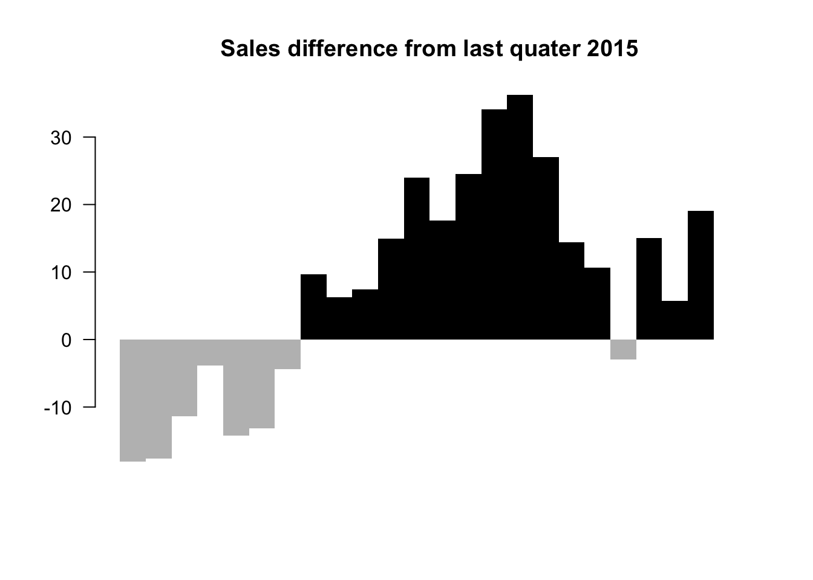
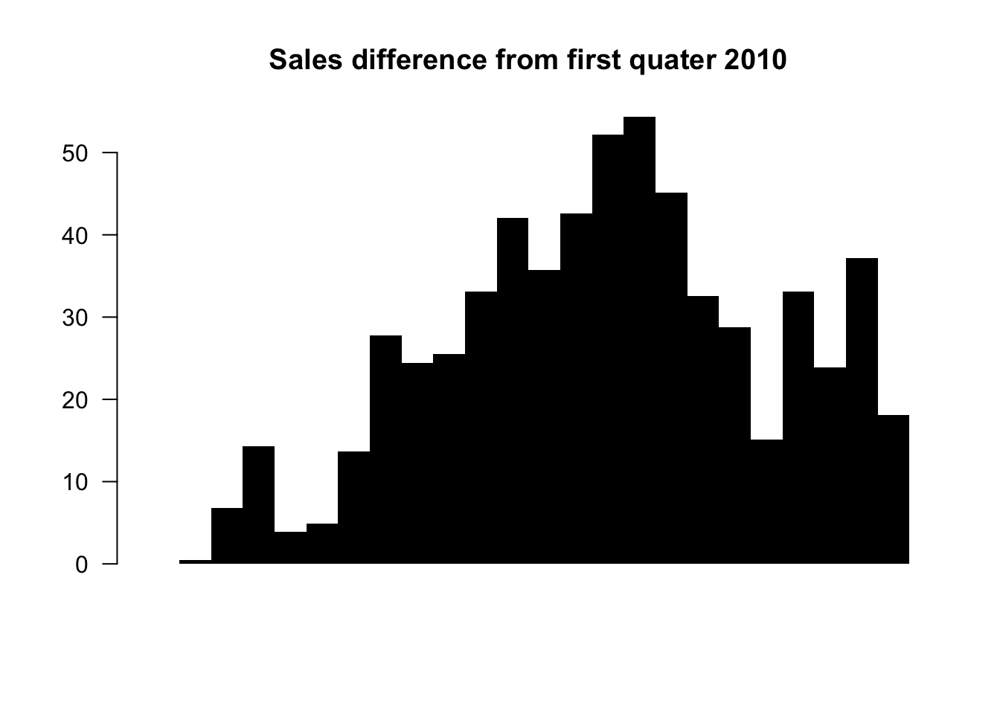

Chapter 5 Patterns
- Reusable solutions to everyday data visualization questions
- Applied by multiple members of the course
5.1 Why pie chart is bad: a comparison with bar chart
Using pie chart is usually considered as a bad idea when it comes to data visualization. But why? Here, we explore some cons of using pie chart to convey information and compare its effectiveness to bar chart (Hickey 2013) (Henry 2017) (Quach 2016).
- Some information may look nearly identical in pie chart. But if the data is presented with bar charts, the story is different. See figure ?? and ?? for examples.
 Source: (Hickey 2013)
Source: (Hickey 2013)
 Source: (Hickey 2013)
Source: (Hickey 2013)
- It is difficult to compare the slices of a circle to figure out the distinctions in size between each pie slice, especially when there are a lot of categories. See figure ?? for example.

(Source: (Hickey 2013))
- Pie chart is easy to be manipulated (e.g. using a 3D pie chart). See figure ?? for example.
 Source: (Hickey 2013)
Source: (Hickey 2013)
- Pie chart may be useful when comparing 2 different categories with different amounts of information. Specifically, it does a better job to distinguish two parts with a 25:75 split or one that is not 50:50 as people are sensitive to a right angle or a dividing line that is not straight. But this could be simply done by showing two numbers! See figure ?? and ?? for examples.
 (Source: (Henry 2017))
(Source: (Henry 2017))
 (Source: (Henry 2017))
(Source: (Henry 2017))
5.2 Chose the right baseline in data visualization
Baseline is very important to data visualization. If baseline is different, the meanning will change a lot. Now here is a case study to show the importance of baseline and how to use it in different ways.
Here I use the same method for a new dataset to .
# Create the data.
a <-rep(c(2010,2011,2012,2013,2014,2015),each = 4)
b <- seq(1:24)
c <- c(64.9,65.33,71.67,79.17,68.78,69.83,78.61,92.68,89.28,90.43,97.96,106.96,100.66,107.53,117.06,119.21,110.05,97.42,93.62,97.99,80,88.74,102.06,83)
data <- as.data.frame(cbind(a,b,c))
colnames(data) <-c("year","quater","sales")- Regular quaterly sales. We can see sales decreased a lot around 2014. The baseline here is historical sales.
# Regular time series for sales
par(cex.axis=0.7)
data.ts <- ts(data$sales, start=c(2010, 1), frequency=4)
plot(data.ts, xlab="", ylab="", main="sales per quater", las=1, bty="n")
- Quaterly and yearly change sales. The baseline here is zero and look at the percentage changes.
# Quaterly change
curr <- as.numeric(data$sales[-1])
prev <- as.numeric(data$sales[1:(length(data$sales)-1)])
quaChange <- 100 * round( (curr-prev) / prev, 2 )
barCols <- sapply(quaChange,
function(x) {
if (x < 0) {
return("#2cbd25")
} else {
return("gray")
}
})
#monChange.ts <- ts(monChange, start=c(1976, 2), frequency=12)
barplot(quaChange, border=NA, space=0, las=1, col=barCols, main="% change, quaterly")
# Year-over-year change
curr <- as.numeric(data$sales[-(1:4)])
prev <- as.numeric(data$sales[1:(length(data$sales)-4)])
annChange <- 100 * round( (curr-prev) / prev, 2 )
barCols <- sapply(annChange,
function(x) {
if (x < 0) {
return("#2cbd25")
} else {
return("gray")
}
})
barplot(annChange, border=NA, space=0, las=1, col=barCols, main="% change, annual") From this plot, it is very clear that the magnitude of drops in sales for some quaters.
From this plot, it is very clear that the magnitude of drops in sales for some quaters.
- The sales difference compare to now. The baseline here is the current sales.
# Relative to current 2015
curr <- as.numeric(data$sales[length(data$sales)])
salesDiff <- as.numeric(data$sales) - curr
barCols.diff <- sapply(salesDiff,
function(x) {
if (x < 0) {
return("gray")
} else {
return("black")
}
}
)
barplot(salesDiff, border=NA, space=0, las=1, col=barCols.diff, main="Sales difference from last quater 2015") 4. Sales difference compared to the first quater. ** The baseline here is the first quater sales.**
4. Sales difference compared to the first quater. ** The baseline here is the first quater sales.**
# Relative to first quater
ori <- as.numeric(data$sales[1])
salesDiff <- as.numeric(data$sales) - ori
barCols.diff <- sapply(salesDiff,
function(x) {
if (x < 0) {
return("gray")
} else {
return("black")
}
}
)
barplot(salesDiff, border=NA, space=0, las=1, col=barCols.diff, main="Sales difference from first quater 2010")
- The difference between quater sales and mean. ** The baseline is mean now.**
# difference from the mean
mean <- mean(as.numeric(data$sales))
salesDiff <- as.numeric(data$sales) - mean
barCols.diff <- sapply(salesDiff,
function(x) {
if (x < 0) {
return("gray")
} else {
return("black")
}
}
)
barplot(salesDiff, border=NA, space=0, las=1, col=barCols.diff, main="Sales difference from mean")
So before we start to plot, we should decide the baseline we want to use. Different baseline will lead to totally different graphs.
5.3 Using design patterns to find greater meaning in your data
Visualizations that show comparisons, connections, and conclusions offer analytical clarity.
Patterns based on function can help you see differences and similarities more clearly, understand relationships and behaviors more intimately, and predict future results with a greater level of certainty. When these patterns are presented as visualizations, they help you 1) see comparisons, 2) make connections, and 3) draw conclusions from your data sets. The major functions can be described as:
5.3.1 Comparisons
As shown in Figure 1, the bar chart with sparkline enables you to review the data at two different levels: a high-level assessment of the short-term three-month returns is represented with the bar chart, while the sparkline (the line chart below the bar) provides the details of the historical returns. Quickly and concisely, the sparkline shows you the path that has led up to the most recent returns. You can then assess that a narrow path provides consistent returns across the years while a wide path provides varied returns. Side-by-side comparisons of funds organized into two columns—% Returns and % Ahead of Benchmark—enables peer comparisons and fund-specific benchmark comparisons. Hence, you can see that not only has Global Large Cap Core provided positive returns, it has also provided the best and most consistent returns when compared to the benchmark.
5.3.2 Connections
The string of charts in Figure 2 shows 10-year to year-to-date (YTD) performance returns, which can be interpreted as individual charts or a group of category charts.
Similar to sounds waves, the symmetrical area charts grow equidistant from the source (the zero line) at each time interval to accentuate the returns even further. Here, the y-axis is shown in percentage. Instead of using the zero line to indicate positive or negative returns, it uses color to denote if the category returns are positive (black) or negative (red). For example, Multi Cap Russell 3000 Growth produced 20% positive returns within the one-year time period and is shown with color fill in both directions from the zero line to purposefully duplicate the large gains and specifically uses black color fill to indicate the returns are positive. As evident from the name, the symmetrical chart doubles the returns to emphasize the amount with color fill.
What else can you derive from organizing the information in a spectrum of negative to positive returns? Based on this organization, three groups of categories have resulted in straight losses (red), heavy gains (black), or a mix of gains and losses across a decade of returns. The string of charts makes it easier for you to see these three groups of categories to assess their distribution. Just like sound waves, each chart is a sound bite that streams the returns for each category with a “scream” announcing a huge gain (e.g., Multi-Cap Russel 3000 Growth) or loss (e.g., Mid Cap Russel Mid Cap Growth). In some cases (e.g., Large Cap S&P 500), the chart quietly announces mixed returns to adequately demand less attention.
Next, you might wonder how you would have fared if you had invested in certain funds. You might ask: if I had purchased this fund five years ago, what would my return be? And what about the YTD returns? Since market timing is key to investment choices, the following presentation of hypothetical investments represents a range of results.
5.3.3 Conclusions
In Figure 3, varied performance results become clear with a layered approach to show five potential entry points (10-year, 5-year, 3-year, 1-year, YTD) into an investment. For example, the International Large Cap Core fund provided 27% YTD returns, which contrast the negative returns you would have received had you invested in the fund 1, 5, or 10 years ago. Here, conclusions are derived based on known inputs with a divided review of positive or negative outcomes (shown on the y-axis).
The line weights help to identify each entry point and show the range of differences between the entry points. Accordingly so, resulting returns are shown with simplified curves that connect the inputs and outputs. In this case, the chart has been customized to show an instance in which the user has opted to see the YTD return values as percentages listed to the right of each resulting output.
reference: https://www.oreilly.com/ideas/using-design-patterns-to-find-greater-meaning-in-your-data
5.4 Example Visualizations of Time Series Data
Reference: (Ayalasomayajula XXXX)
What are some of the most common data visualizations you see in newspapers, textbooks, and corporate annual reports? Graphs showing a country’s GDP growth trends or charts capturing a company’s sales growth in the last 4 quarters would be high up on the list. Essentially, these are visualizations that track time series data – the performance of an indicator over a period of time – also known as temporal visualizations.
Temporal visualizations are one of the simplest, quickest ways to represent important time series data. There are 7 handy temporal visualization styles for your time series data.
Line Graph. A line graph is the simplest way to represent time series data. It is intuitive, easy to create, and helps the viewer get a quick sense of how something has changed over time.
Stacked Area Chart is an area chart similar to a line chart. In an area chart, multiple variables are “stacked” on top of each other, and the area below each line is colored to represent each variable.
Figure 5.1 is a stacked area chart showing time series data:
![Student enrollments in India from 2001-10. (Source: [@aya-time-series])](images/aya-stacked.png)
Figure 5.1: Student enrollments in India from 2001-10. (Source: (Ayalasomayajula XXXX))
Stacked area charts are useful to show how both a cumulative total and individual components of that total changed over time.
The order in which we stack the variables is crucial because there can sometimes be a difference in the actual plot versus human perception. The chart plots the value vertically whereas we perceive the value to be at right angles to the general direction of the chart. For instance, in the figure below, a bar graph would be a cleaner alternative.
![Human perception vs actual value. (Source: [@aya-time-series])](images/aya-stacked-perception.jpg)
Figure 5.2: Human perception vs actual value. (Source: (Ayalasomayajula XXXX))
- Bar Charts represent data as horizontal or vertical bars. The length of each bar is proportional to the value of the variable at that point in time. A bar chart is the right choice for you when you wish to look at how the variable moved over time or when you wish to compare variables versus each other. Grouped or stacked bar charts help you combine both these purposes in one chart while keeping your visualization simple and intuitive.
For instance, this grouped bar chart in this interactive visualization of number of deaths by disease type in India not only lets you compare the deaths due to diarrhea, malaria, and acute respiratory disease across time, but also lets you compare the number of deaths by these three diseases in a given year. By switching to the stacked bar chart view, you get an intuitive sense of the proportion of deaths caused by each disease.
![Two different bar charts to represent time series data. (Source: [@aya-time-series])](images/aya-bar1.png)
![Two different bar charts to represent time series data. (Source: [@aya-time-series])](images/aya-bar2.png)
Figure 5.3: Two different bar charts to represent time series data. (Source: (Ayalasomayajula XXXX))
To avoid clutter and confusion, make sure to not use more than 3 variables in a stacked or group bar chart. It is also a good practice to use consistent bold colors and leave appropriate space between two bars in a bar chart. Also, check out our blog on 5 common mistakes that lead to bad data visualization to learn why the base axis for your bar charts should start from zero.
- A Gantt Chart is a horizontal bar chart showing work completed in a certain period of time with respect to the time allocated for that particular task. It is named after the American engineer and management consultant Henry Gantt who extensively used this framework for project management.
![A typical Gantt chart. (Source: [@aya-time-series])](images/aya-gantt.png)
Figure 5.4: A typical Gantt chart. (Source: (Ayalasomayajula XXXX))
Assume you’re planning the logistics for a dance concert. There are lots of activities to be completed, some of which will take place simultaneously while some can be done only after another activity has been completed. For instance, the choreographers, soundtrack, and dancers need to be finalized before the choreography can begin. However, the costumes, props, and stage decor can be planned at the same time as the choreography. With careful preparation, Gantt charts can help you plan for complex, long-term projects that are likely to undergo several revisions and have various resource and task dependencies.
Gantt charts are a popular project management tool since they present a concise snapshot of various tasks spread across various phases of the project. You can show additional information such as the correlation between individual tasks, resources used in each task, overlapping resources, etc., by the use of colors and placement of bars in a Gantt chart.
- A Stream Graph is essentially a stacked area graph, but displaced around a central horizontal axis. The stream graph looks like flowing liquid, hence the name.
![A stream graph showing a randomly chosen listener's last.fm music-listening habits over time. (Source: [@aya-time-series])](images/aya-stream.png)
Figure 5.5: A stream graph showing a randomly chosen listener’s last.fm music-listening habits over time. (Source: (Ayalasomayajula XXXX))
Stream graphs are great to represent and compare time series data for multiple variables. Stream graphs are, thus, apt for large data sets. Remember that choice of colors is very important, especially when there are lots of variables. Variables that do not have significantly high values might tend to get drowned out in the visualization if the colors are not chosen well.
- Heat Map Geospatial visualizations often use heat maps since they quickly help identify “Hot spots” or regions of high concentrations of a given variable. When adapted to temporal visualizations, heat maps can help us explore two levels of time in a 2D array.
This heat map visualizes birthdays for babies born in the United States between 1973 and 1999. The vertical axis represents the 31 days in a month while the horizontal axis represents the 12 months in a year. This chart quickly helps us identify that a large number of babies were born in the later half of July, August, and September.
![Heat map can be useful to present 2-D time data. (Source: [@aya-time-series])](images/aya-heat-map.png)
Figure 5.6: Heat map can be useful to present 2-D time data. (Source: (Ayalasomayajula XXXX))
Heat maps are perfect for a two-tiered time frame – for instance, 7 days of the week spread across 52 weeks in the year, or 24 hours in a day spread across 30 days of the month, and so on. The limitation, though, is that only one variable can be visualized in a heat map. Comparison between two or more variables is very difficult to represent.
- Polar Area Diagram. Think beyond the straight line! Sometimes, time series data can be cyclical – a season in a year, time of the day, and so on. Polar area diagrams help represent the cyclical nature time series data cleanly. A polar diagram looks like a traditional pie chart, but the sectors differ from each other not by the size of their angles but by how far they extend out from the centre of the circle.
This popular polar area diagram created by Florence Nightingale shows causes of mortality among British troops in the Crimean War. Each color in the diagram represents a different cause of death. (Check out the the text legend for more details.)
![Source: [@aya-time-series]](images/aya-polar.jpg)
Figure 5.7: Source: (Ayalasomayajula XXXX)
Polar area diagrams are useful for representing seasonal or cyclical time series data, such as climate or seasonal crop data. Multiple variables can be neatly stacked in the various sectors of the pie.
It is crucial to clarify whether the variable is proportional to the area or radius of the sector. It is a good practice to have the area of the sectors proportional to the value being represented. In that case, the radius should be proportional to the square root of the value of the variable (since area of a circle is proportional to the square of the radius).
5.5 Tips to improve Data Visualization
5.5.1 1.Comparison
Include a zero baseline if possibleAlthough a line chart does not have to start at a zero baseline, it should be included if it gives more context for comparison. If relatively small fluctuations in data are meaningful (e.g., in stock market data), you may truncate the scale to showcase these variances; Always choose the most efficient visualization; Watch your placement You may have two nice stacked bar charts that are meant to let your reader compare points, but if they’re placed too far apart to “get” the comparison, you’ve already lost; Tell the whole story Maybe you had a 30% sales increase in Q4. Exciting! But what’s more exciting? Showing that you’ve actually had a 100% sales increase since Q1. ### 2.Copy Don’t over explain If the copy already mentions a fact, the subhead, callout, and chart header don’t have to reiterate it; Keep chart and graph headers simple and to the point There’s no need to get clever, verbose, or pun-tastic. Keep any descriptive text above the chart brief and directly related to the chart underneath. Remember: Focus on the quickest path to comprehension; Use callouts wisely Callouts are not there to fill space. They should be used intentionally to highlight relevant information or provide additional context; Don’t use distracting fonts or elements Sometimes you do need to emphasize a point. If so, only use bold or italic text to emphasize a point—and don’t use them both at the same time. ### 3.Color Use a single color to represent the same type of data; Watch out for positive and negative numbers Don’t use red for positive numbers or green for negative numbers. Those color associations are so strong it will automatically flip the meaning in the viewer’s mind; Make sure there is sufficient contrast between colors; Avoid patterns Stripes and polka dots sound fun, but they can be incredibly distracting. If you are trying to differentiate, say, on a map, use different saturations of the same color. On that note, only use solid-colored lines (not dashes); Select colors appropriately; Don’t use more than 6 colors in a single layout. ### 4.Ordering Order data intuitively There should be a logical hierarchy. Order categories alphabetically, sequentially, or by value; Order consistently; Order evenly Use natural increments on your axes (0, 5, 10, 15, 20) instead of awkward or uneven increments (0, 3, 5, 16, 50). ### 5.Audience perspective Let the users lead;Know your audience,Designers should consider the way users prefer to understand information, even in choosing basic analytic approaches. For users to feel comfortable adopting and sharing insights from analytics, they must be able to explain and defend the data. ### 6.Use layers to tell a story While style is one form of customization, layering unique data sets on a single visualization can tell a richer narrative and connect users to the data without getting too crowded. On a map, this can be as simple as zooming in and out, but it can also involve drill-downs (choosing a data point and expanding it to show more detail), links and other shortcuts. ### 7.Keep it simple Analytic results shouldn’t be presented to 10 decimal places when the user doesn’t need that level of precision to make a decision or understand a concept. Effective visual interfaces avoid 3-D effects or ornate gauge designs (a.k.a. “chart junk”) when simple numbers, maps or graphs will do.
References: https://www.columnfivemedia.com/25-tips-to-upgrade-your-data-visualization-design
5.6 More ways to improve your visualization design
5.6.1 Free eBooks All Designers Should Read
From online surveys to beefed-up analytics, we’re able to gather and analyze more data than ever before. But how do you turn your findings from a dense spreadsheet into something that really makes your point? Good information design is the key.
There’s a wealth of free resources out there in the form of handy little design ebooks.
- Design’s Iron Fist — Jarrod Drysdale https://studiofellow.com/newsletter/
The free ebook, Design’s Iron Fist, is a collection of Drysdale’s previous work all wrapped up in one neat little package. Aside from practical tutorials and processes, this book also offers help on how to get into the mindset of being a truly great designer.
- The Creative Aid Handbook — Kooroo Kooroo https://issuu.com/koorookooroo/docs/kooroo_kooroo_creative_aid
Creativity doesn’t just happen overnight. It’s something that each and every designer has to work at on a day-to-day basis. If you find that your innovative juices are running dry, The Creative Aid Handbook could be the answer. The helpful guide looks at how you can boost your intellect, foster your well-being, and, most importantly, become more creative.
- Designbetter.co — InVision https://www.designbetter.co/
InVision released three fantastic design books that are available for free. Each book discusses various aspects of design like design process, management, and business. Moreover, some of the materials are available in audio format.
- Type Classification http://justcreative.com/featured-articles/type-classification-ebook/
Type Classification is a helpful beginner’s guide to typography. It should give you the foundations you need to not only start classifying various forms of type but also understanding when and how to use them to alarmingly great effect. It covers a history of each of the type forms and the basic facts you need know about them.
References: https://uxplanet.org/free-ebooks-all-designers-should-read-60dbb63f762
5.7 Tips for Tableau
Running totals
Common Baseline
Weighted averages
Moving average
Grouping by aggregates
Different years comparison
Appending excel sheets
Bar chart totals
Fixed axis when re-drawing charts
Auto-fitting screen behavior depending on data selection
References: http://cdn2.hubspot.net/hubfs/257922/Docs/BlueGranite_whitepaper_10useful.pdf
References
Hickey, Walter. 2013. “The Worst Chart in the World.” Blog. Business Insider. http://www.businessinsider.com/pie-charts-are-the-worst-2013-6.
Henry, Kristin. 2017. “In Defense of Pie Charts, and Why You Shouldn’t Use Them.” Medium. https://medium.com/@KristinHenry/in-defense-of-pie-charts-and-why-you-shouldnt-use-them-df2e8ccb5f76.
Quach, Alex. 2016. “Why Pie Charts Often Suck: And How We Did Better.” The Mission. https://medium.com/the-mission/to-pie-charts-3b1f57bcb34a.